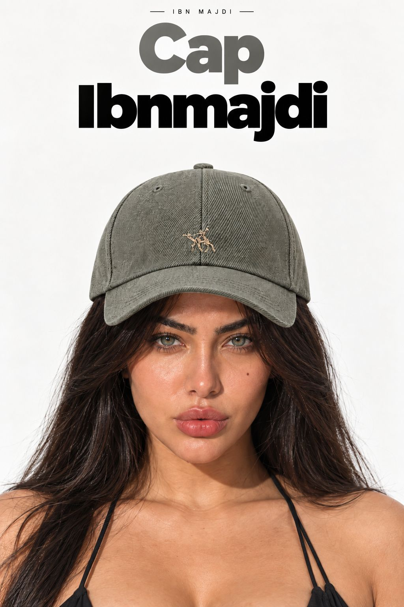
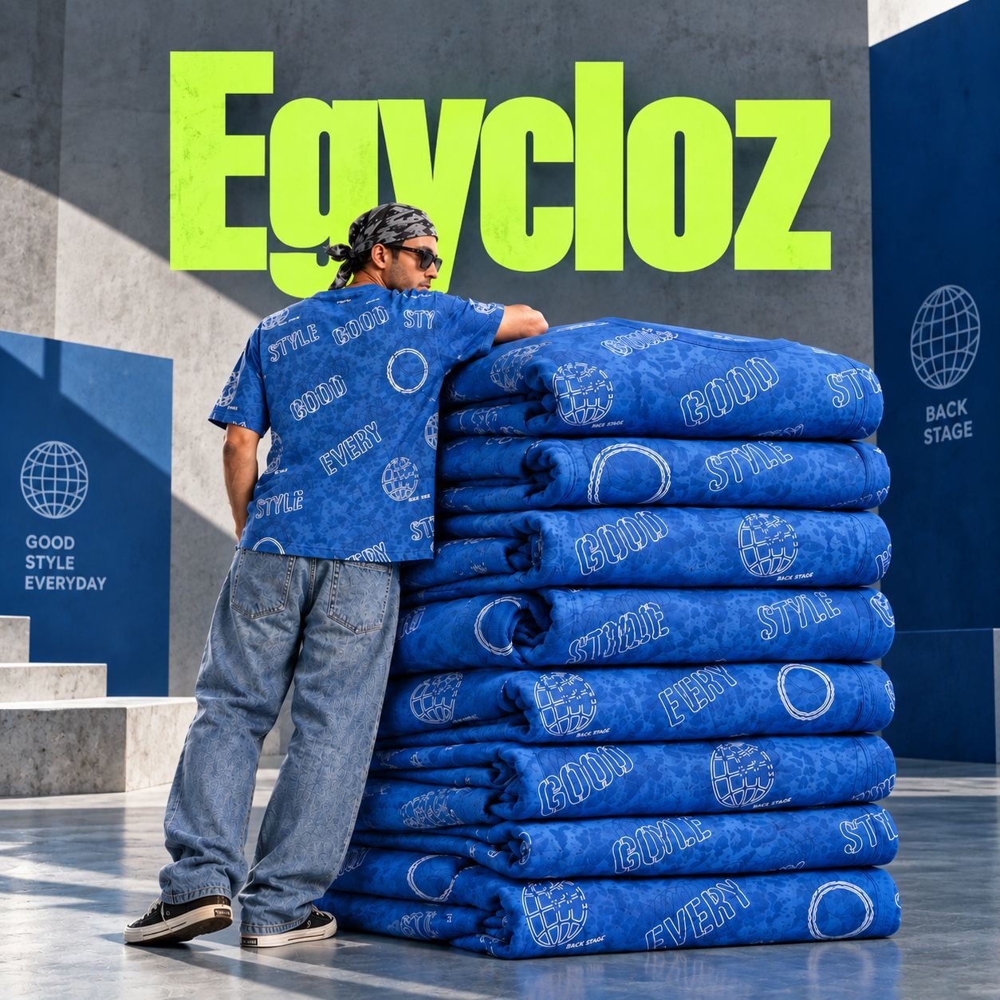
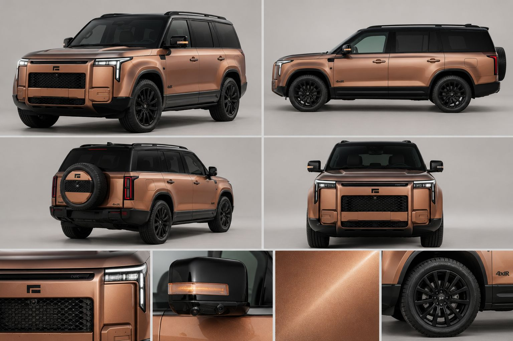
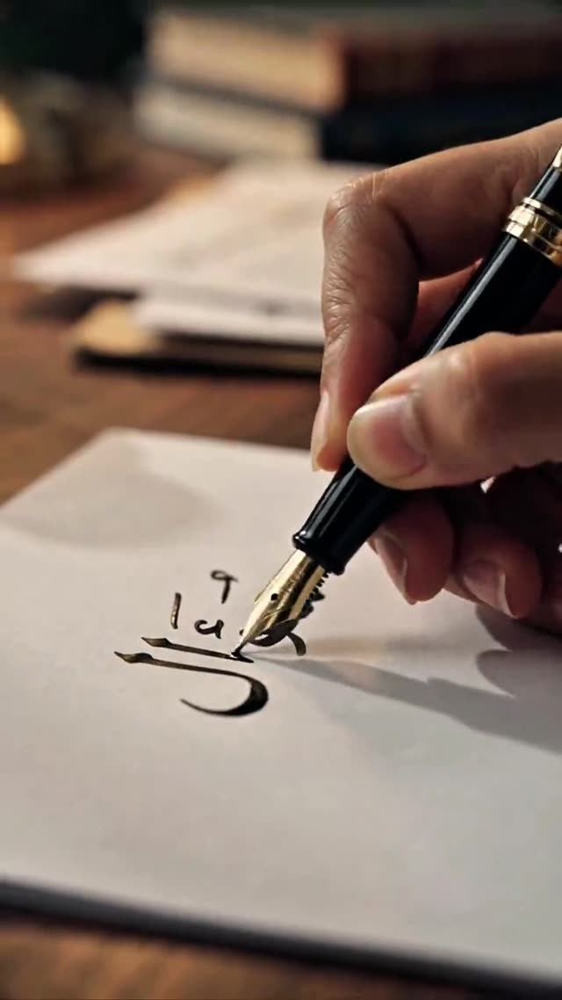

SELECTED WORK / IBN MAJDI
All the work,
in one place.
AI video, film visual development,
and independent visual experiments.
12 PROJECTSIMAGES & MOTIONSCROLL TO EXPLORE ↓
THE PROJECTS
Choose a card. Step inside the project.
 Brand identity
Brand identity01 / 14 visuals
Thamanya
Explore project


Product campaign02 / 14 visuals
Cap by Ibnmajdi
Explore project
 Product campaign
Product campaign03 / 9 visuals
Tank
Explore project


Fashion campaign04 / 8 visuals
Egycloz
Explore project
 Food campaign
Food campaign05 / 5 visuals
Foodiisha
Explore project
 Brand concept
Brand concept06 / 4 visuals
Athath
Explore project
 Product campaign
Product campaign07 / 7 visuals
Method Men
Explore project


Automotive concept08 / Film + visuals
Rox Adams 26
Play project

AI video09 / AI film
Podcast
Play project
 AI video
AI video10 / AI film
Nadek
Play project
 AI video
AI video11 / AI film
Spiro Spathis
Play project
 Spec ad
Spec ad12 / Watch film
Cartier
Play spec ad
Have something in mind?
Let's talk ↗